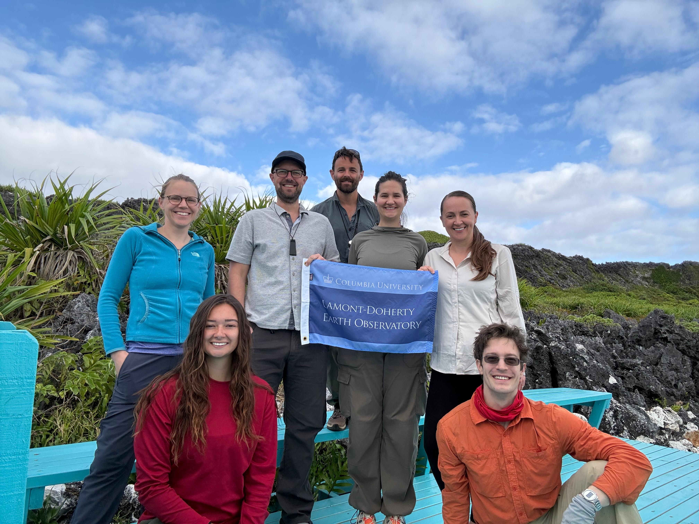

Research.
How do sediments preserve—and distort—environmental change?

Past sea levels.
Ancient shorelines reveal past ice loss—once we account for their age, formation, and subsequent land motion.
Methods & current directions
Field mapping and 3D surveys connect reefs, beaches, and dunes across landscapes. Developing work in Turks and Caicos tests how reef growth, waves, and sediment transport shape records often attributed to sea-level change.

Clocks within rocks.
Grains form, accumulate, and become cemented together. We investigate which of these events their isotope records can date.
Methods & current directions
Developing uranium–thorium research combines microscopy, isotope measurements, and statistical models to test the histories of grains and cements in beach, dune, and seafloor deposits.

Signals in the sediment.
A chemical shift can reflect global environmental change, sediment transport, or later reactions. We test which explanation fits.
Methods & current directions
Stratigraphy, geochemistry, and physical models distinguish local effects from shared signals. Bayesian inference connects incomplete records while accounting for uncertain ages.
StratMC
Open-source tools for putting uncertain geological records on a shared timeline.
Developed by Stacey Edmonsond and Blake Dyer; Stacey led the code, testing, and documentation.

Tropical shores. Polar ice.
Through HiSEAS, Blake contributes field geology, sedimentology, and statistical expertise to an international study of Last Interglacial ice-sheet change.
Explore HiSEASProject & field resources
HiSEAS is supported by NSF EAR 24-20482 (2024–2029).
Cook Islands expedition report